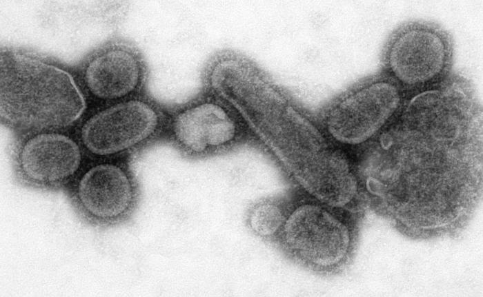

Іспанський грипп або"іспанка"

Іспа́нський грип, або «іспа́нка» (фр. La Grippe Espagnole, або ісп. La Pesadilla) — найбільша за смертністю пандемія грипу за всю історію людства. У 1918–1919 роках (18 місяців) у всьому світі від іспанки померло приблизно 50-100 млн людей або 2,6-5,2% населення Землі. Було заражено близько 400 млн людей, або більше, ніж 20% населення планети. Пандемія почалася в останні місяці Першої світової війни і швидко затьмарила це найбільше кровопролиття за масштабом жертв. Пандемія грипу 2009 була спричинена вірусом того ж серотипу (A / H1N1), хоча за смертністю була одна з найменших.
Характеристики вірусу, картина хвороби

Різновид вірусу грипу був H1N1. Цей різновид грипу дещо схожий на сучасний свинячий грип. Свою назву грип набув завдяки тому, що Іспанія першою оголосила про спалах цієї хвороби. Назва хвороби закріпилася в основному через газетний галас, оскільки Іспанія не брала участь у військових діях і на неї не поширювалася військова цензура. «Іспанкою» хворобу почали називати учасники світової війни. У травні 1918 року в Іспанії було заражено 8 млн людей, або 38% населення країни (заразився, але видужав, і король Іспанії Альфонс XIII). Багато жертв грипу — молоді і здорові людьми вікової групи 20-40 років. Люди віком понад 40 років практично не підпадали під ризик заразитися іспанкою.
Симптоми хвороби: висока гарячка, виразна інтоксикація, кривавий кашель, задишка, крововиливи під шкіру. На пізніших стадіях хвороби вірус породжував внутрішньолегеневу кровотечу (сучасна назва — геморагійний набряк легень), внаслідок якої хворий захлинався власною кров’ю. Деякі заражені вмирали наступного дня після зараження внаслідок серцевої недостатності.
Поширення пандемії, масштаби смертності
Завдяки технічному прогресу, (потяги, дирижаблі, швидкісні кораблі), хвороба поширилася дуже швидко по цілій планеті. У деяких країнах на цілий рік були закриті публічні місця, суди, школи, церкви, театри, кінотеатри. Іноді продавці забороняли покупцям заходити в магазини. Замовлення виконували на вулиці. У деяких країнах був введений воєнний режим. У одному з міст США були заборонені рукостискання. Єдиним населеним місцем, яке не піддалося пандемії, був острів Маражо в гирлі Амазонки в Бразилії. У Кейптауні машиніст потяга заявив про смерть 6 пасажирів на ділянці довжиною всього 5 км. У Барселоні щодня вмирали 1200 людей. У Австралії лікар налічив за одну годину на одній тільки вулиці 26 похоронних процесій. Вимирали цілі села від Аляски до Південної Африки. Були міста, де не залишилося жодного здорового лікаря. Часто навіть не вистачало кладовищного місця аби поховати померлих. Викопували масові могили, використовуючи при цьому паровий совок. Людей ховали десятками без труни і відспівувань.
Грип за перші 25 тижнів убив 25 млн людей. СНІДу було потрібно 25 років, щоб убити стільки ж. Масове переміщення військ країн-учасниць Першої світової війни привело до прискорення розповсюдження грипу. Імунна система солдатів, що брали участь в Першій світовій війні, була ослаблена хімічними атаками. Це спричинило страшні епідемії грипу у військах. В індійській армії було заражено 22% військовослужбовців. Більшість хворих померли.
Іспанський грип убив більше американців, ніж дві світові війни, війна в Кореї і у В'єтнамі разом узят
Сучасні дослідження вірусу
У лютому 1998 року Інститут Молекулярної Патології Армії США (AFIP) отримав зразок вірусу H1N1 1918 року з трупа корінної мешканки Аляски, похованої у вічній мерзлоті 80 років тому. Цей зразок дозволив вченим в жовтні 2002 року відтворити генну структуру вірусу 1918 року. Вірус іспанки H1N1 має спільні риси з вірусом пташиного грипу, проте є слабшим від поширеного сучасного вірусу пташиного грипу — H5N1. Смертність від H5N1 вважають набагато вищою. Вчені встановили, що вірус, проникаючи глибоко в легеневу тканину людини, уражає особливі рецептори сіалових кислот і спричинює пневмонію, яка призводить до смерті людини. Пандемія саме H1N1 повторилася в 1978 і 2009 роках.
Підготував Прокопчук В.М.